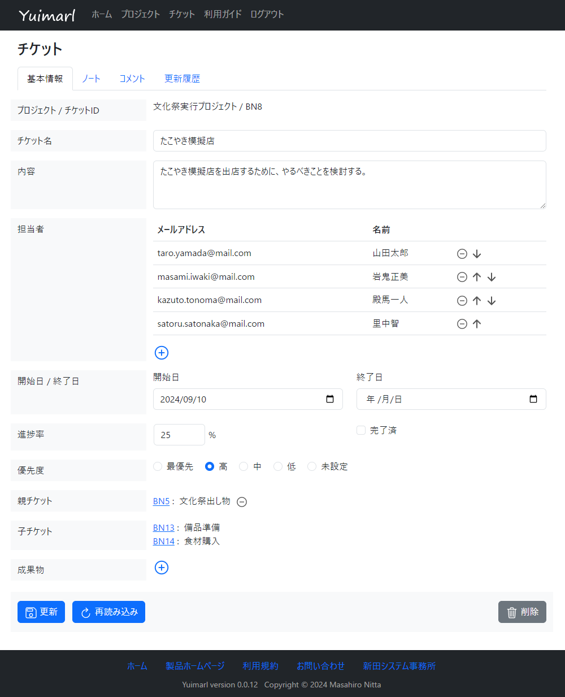
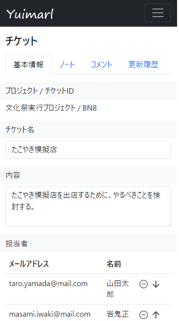

Yuimarl
「Yuimarl」（ゆいまーる）は、少人数のグループ、または、個人 のプロジェクトを管理するためのシステムです。
以下の特徴があります。
- グループまたは個人のプロジェクトを自由に登録することができます。
- 制限内であれば、無料で使うことができます。
- インターネットにつながった、パソコン、スマートフォン、タブレットの Webブラウザで使うことができます。
- サーバーをご自身で運用するための情報が公開されています。
- ソースコードが公開されているので、プログラミングの知識があれば、ご自身で機能を改変することができます。
Yuimarl には、以下の利用制限があります。
- １人のアカウントで、最大10個のプロジェクトを作成することができます。（他のユーザーが作成したプロジェクトには、何個でも参加できます。）
- １つのプロジェクトには、（オーナーを含めて）最大で 20人のメンバーを参加させることができます。
- １つのプロジェクトには、最大で 1000個のチケットを作成することができます。（このシステムでは、プロジェクトで行うタスクを「チケット」として登録します）
この制限を超えて利用したい場合は、有料で対応させていただきます。
ログイン URL
次の URL からログインすると、Yuimarl をお使いいただくことができます。使用方法は、使い方 をご覧ください。
現時点での機能は、以下の通りです。順次、機能を追加していきます。
- Googleアカウント / GitHubアカウント / メールアドレス のいずれかでログインする。
- プロジェクトを登録する。
- チケットを登録する。
名前の由来
「ゆいまーる」は、沖縄の言葉で、「相互扶助」（そうごふじょ）、「助け合い」を意味します。
「ゆい」は「結ぶ」、「まーる」は「交流の場」です。
このシステムが、共同作業や個人作業の基盤となって、価値的な作業が推進されればよいと願っています。
また、多くの方からのご意見、ご協力をいただき、このシステムが成長していけばよいと思っています。
そうした願いと期待を込めて、この名前を付けました。
画面イメージ
チケット編集画面のイメージ （パソコン）

{kind=link}
チケット編集画面のイメージ （スマートフォン）

{kind=link}
開発情報、動作環境
Yuimarl のソースコードは、次の URL で公開されています。
Yuimarl のプログラミング言語には、Rust が使用されています。
サーバーが Google Cloud のインフラで動作します。アプリケーションの実行環境は Cloud Run、データベースは Firestore、ユーザー認証には Firebase Authentication が使われています。
アーキテクチャー
Yuimarl のシステムを構成するソフトウェア階層と、そこで使用されているプロダクトは、次のようになっています。
| 階層 | プロダクト | 説明 |
|---|---|---|
| プレゼンテーション層 | 各種Webブラウザ | Google Chrome、Microsoft Edge、Safari、Firefox で動作確認済みです。 |
| FirebaseUI Auth | Firebase Authentication を使ったユーザー認証のUIライブラリ | |
| Bootstrap | フロントエンドツールキット | |
| jQuery | JavaScript ライブラリ | |
| Marked | マークダウンでの入力を行うための JavaScript ライブラリ | |
| アプリケーション層 | Cloud Run | アプリケーションを Docker コンテナで実行する Google Cloud 環境 |
| Firebase Authentication | Google Cloud のユーザー認証基盤 | |
| axum | Rust の Webアプリケーションフレームワーク | |
| データアクセス層 | Firestore | Google Cloud のドキュメントデータベース |
ライセンス
Yuimarl は、MITライセンス（参考日本語訳）の下で公開されています。ソースコードのご使用に当たっては、このライセンス条項に従ってください。
- ソフトウェア・成果物の著作権は作者が保持しています。
- 作者または著作権者は、ソフトウェアに関して、一切の責任を負いません。
- このソフトウェアのソースコードを、商用・非商用に関わらす、誰でも無料で使っていただいて結構です。ただし、著作権表示および本許諾表示をソフトウェアのすべての複製または重要な部分に記載しなければなりません。
- 配布の際には、ライセンス条項も配布する必要があります。
カスタマイズ
Yuimarl のソースコードは、自由に改変することができます。Yuimarl
をベースとして、別のシステムを開発することもできます。
カスタマイズを新田システム事務所に依頼される場合は、ご連絡ください。
問い合わせ
Yuimarl に関するお問い合わせ、ご意見、ご要望、不具合報告 等は、masa.nitta@nifty.ne.jp まで、電子メールでお願いいたします。
共同開発者募集
Yuimarl を共同で開発してくださる企業または個人の方を募集しています。
報酬は出せませんので、ボランティアとなります。開発環境はご自身で用意していただき、お好きな時間にご自宅等で開発を行っていただきます。
プログラミングはしないけれども、機能・デザインについてご意見を述べていただいたり、テストに参加するというだけでも結構です。
参加をご希望される方は、masa.nitta@nifty.ne.jp まで、電子メールでご連絡ください。